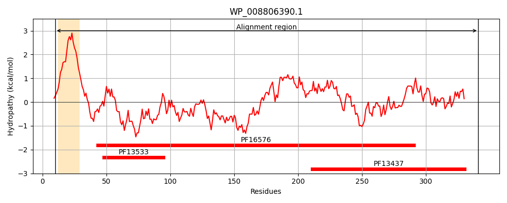
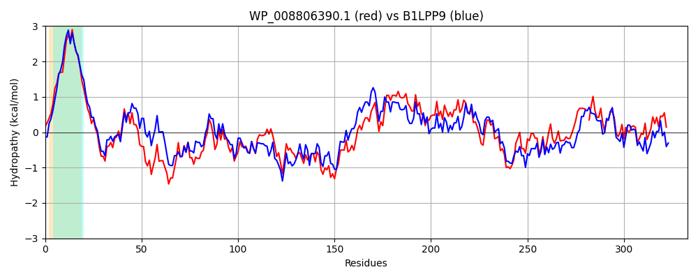

Hit Accession: B1LPP9
Hit TCID: 8.A.1.1.3
Hit Description: gnl|BL_ORD_ID|1624 gnl|TC-DB|B1LPP9|8.A.1.1.3 Multidrug resistance protein MdtN OS=Escherichia coli (strain SMS-3-5 / SECEC) GN=mdtN PE=4 SV=1
Mach Len: 333
e:0.000000
Query TMS Count : 1
Hit TMS Count: 1
TMS-Overlap Score: 0.800000
Predicted Substrates:None
BLAST Alignment:
Score: 1047 , Bit scores: 407 bits, E-value: 4.3e-143, Alignment length: 333, Percentage identity: 61
Query: 10 RKKWPLLALVLAAILALILVIWQLQTSPETNDAYVYADTIDVVPEVSGRIVEMPIRDNQRVKKGDLLFRIDPRPYQAMLDDAKARLTTLDAQIMLTQRTIKAQEYNAQSVAAAVERARALVKQTTSTRTRLEPLVPQGFASQEDLDQARTAEKAARAELEATLLQARQASAAVTGVDAMVAQRAGILAQIALAELHLEFTEVRAPFNGVVVALKTTVGQYASALKPVFTLLDDDRWYVIANFRETDLNNVRPGVAARITVMTNHNRTFNGVVDSVGSGVLP-EGGSVIEGLPLIQKSINWVHVSQRFPVKIAVSDPDPALFRMGASASAVLQP 341
R K+P L +V A++AL+ VIW++ ++P TNDAY ADTIDVVPEVSGRIVE+ + DNQ VK+GDLLFRIDPRPY+A L A+A L LD QIMLTQR++ AQ++ A SV A VE+ARA KQ T T R EPL+ +GF S ED+D+ARTA++AA A+L A LLQA+ A++AV+GVDA+VAQRA + A IAL +LHLE VRAPF+G V++LKT+VGQ+ASA++P+FTL+D WYVIANFRETDL N+R G A I +M++ +TF G VDS+G GVLP +GG V+ GLP + +SINWV V+QRFPVKI V PDP +FR+GASA A L+P
Sbjct: 10 RSKFPALLVVALALVALVFVIWRVDSAPSTNDAYASADTIDVVPEVSGRIVELAVTDNQAVKQGDLLFRIDPRPYEANLAKAEASLAALDKQIMLTQRSVDAQQFGADSVNATVEKARAAAKQATDTLRRTEPLLKEGFVSAEDVDRARTAQRAAEADLNAVLLQAQSAASAVSGVDALVAQRAAVEADIALTKLHLEMATVRAPFDGRVISLKTSVGQFASAMRPIFTLIDTRHWYVIANFRETDLKNIRSGTPATIRLMSDSGKTFEGKVDSIGYGVLPDDGGLVLGGLPKVSRSINWVRVAQRFPVKIMVEKPDPEMFRIGASAVANLEP 342 | Protein Hydropathy Plots: |
|---|
|  |  |
Pairwise Alignment-Hydropathy Plot:
|
|---|
|  |